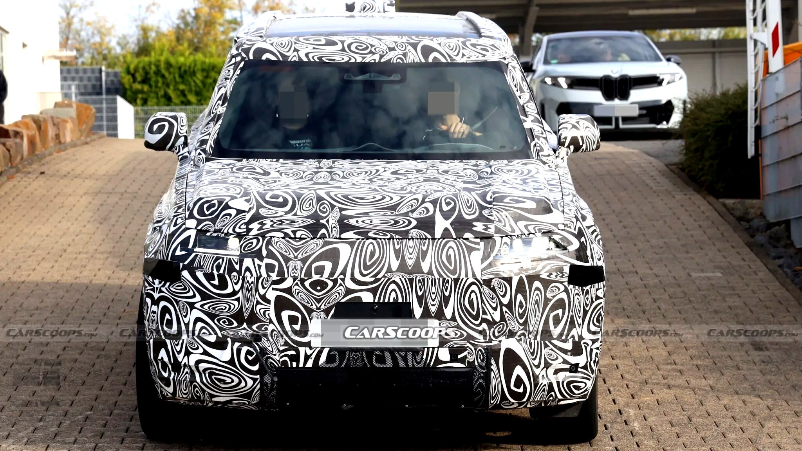

for DC Advanced UX Team.Vivi · Yohan · Libby · Lim Jisu · Katey · Anna
Back Issue

Design
Baby Defender hangs its spare on the back
Land Rover's compact Defender revives the rear-mounted spare wheel — a detail most rivals deleted for weight and emissions — precisely because it separates the car from 'the endless stream of similarly sized premium crossovers'. Sometimes the strongest differentiator is the old part everyone else optimized away.
랜드로버의 컴팩트 디펜더가 리어 스페어 타이어를 부활시켰다. 경쟁사 대부분이 무게와 배출 때문에 지워버린 디테일 — 바로 그것이 '끝없이 이어지는 비슷한 크기의 프리미엄 크로스오버' 사이에서 이 차를 구분해준다. 때로 가장 강한 차별화는 남들이 최적화로 지워버린 옛 부품이다.
WardsAuto's 2026 best-interiors list runs from a Nissan Sentra to the Corvette ZR1X and Genesis's 27-inch OLED — and the judges' recurring praise is telling: comfortable seats, honest materials, and physical controls that don't distract. The industry's own referees keep scoring tactility above spectacle.
워즈오토 2026 베스트 인테리어 리스트는 닛산 센트라부터 콜벳 ZR1X, 제네시스 27인치 OLED까지 이어진다. 심사평에서 반복되는 칭찬이 의미심장하다 — 편한 시트, 정직한 소재, 주의를 뺏지 않는 물리 버튼. 업계의 심판들은 여전히 스펙터클보다 촉각에 점수를 준다.
Anker's MindBase, shown at IFA, retrofits existing eufy home cameras with on-device AI and up to 48TB of local memory — smarter search and recognition without a cloud subscription. A pointed design position: intelligence as an upgrade you own, not a service you rent.
Anker 在 IFA 展出的 MindBase，为现有的 eufy 家用摄像头加装端侧 AI 和最高 48TB 本地存储——更聪明的检索与识别，却不需要云订阅。一个鲜明的设计立场：智能是你拥有的升级，而不是你租用的服务。
앵커가 IFA에서 선보인 마인드베이스는 기존 유피 홈 카메라에 온디바이스 AI와 최대 48TB 로컬 메모리를 더한다. 클라우드 구독 없이 더 똑똑한 검색과 인식. 선명한 디자인 입장 — 지능은 빌려 쓰는 서비스가 아니라 소유하는 업그레이드다.
Yanko's tour of IFA 2026's oddities: a lamp that levitates while lit, a wearable that lets a dog call you with three jumps, a printer that prints on torn paper, and a typewriter-keyboard with a working return lever. The fringe is where interaction ideas rehearse before going mainstream.
Yanko 巡礼 IFA 2026 的怪奇角落：点亮时悬浮的台灯、狗狗跳三下就能给你打电话的穿戴设备、能在破纸上打印的打印机、带真回车杆的打字机键盘。边缘地带，正是交互创意进入主流前的排练场。
얀코가 돌아본 IFA 2026의 기묘한 구석 — 켜진 채 공중부양하는 램프, 개가 세 번 점프하면 주인에게 전화가 걸리는 웨어러블, 찢어진 종이에 인쇄하는 프린터, 실제 리턴 레버가 달린 타자기 키보드. 프린지는 인터랙션 아이디어가 주류로 가기 전 리허설하는 무대다.
Hyundai's next Kona has been spied nearly undisguised, softening the current car's most aggressive styling moves. After a decade of louder-every-cycle design, one of the industry's boldest studios quietly tapping the brakes is itself news.
现代下一代 Kona 几乎不加伪装地现身谍照，收敛了现款最激进的造型手笔。在'一代比一代喧哗'的十年之后，业内最大胆的设计团队之一悄悄踩下刹车，这本身就是新闻。
현대 차세대 코나가 거의 위장 없이 포착됐다. 현행 모델의 가장 공격적인 스타일링을 눅인 모습. '세대마다 더 요란하게' 달려온 10년 끝에, 업계에서 가장 대담한 스튜디오가 조용히 브레이크를 밟는 것 — 그 자체가 뉴스다.
At IFA, AEG applied strict Bauhaus discipline to a countertop pizza oven — pure geometry, honest materials, zero appliance kitsch. Proof that even the most novelty-prone category calms down when a design language is enforced rather than decorated.
AEG 在 IFA 把严格的包豪斯纪律用在了台式披萨炉上：纯粹几何、诚实材料、零家电媚俗。证明哪怕最容易堆噱头的品类，只要设计语言是被执行而非被装饰的，也会安静下来。
AEG가 IFA에서 카운터톱 피자 오븐에 엄격한 바우하우스 규율을 적용했다. 순수한 기하, 정직한 소재, 가전 특유의 키치 제로. 노벨티로 흐르기 쉬운 카테고리도 디자인 언어를 '장식'이 아니라 '집행'하면 차분해진다는 증명.
The ARBREST COVE office chair starts from female anthropometrics — posture, proportion, support points — instead of scaling down a chair built around male averages. A quiet indictment of how much 'universal' ergonomics was never universal at all.
Wearable exoskeletons have long boosted hips and backs while ignoring the joint that fails first — Halo builds its assistance around the knee. Body-worn mobility design maturing from strength amplifier to targeted joint care.
Amsterdam Fashion Week 2026 scattered its shows across experimental venues — including a runway through a working supermarket. Staging as the message: fashion presented inside everyday infrastructure reads differently than fashion on a pedestal.
designboom revisits Leisurama — the 1960s prefab beach houses by Andrew Geller and Raymond Loewy, sold through Macy's, furniture and toothbrushes included. Mid-century proof that 'design for everyone' once meant a whole house, retail-priced and move-in ready.
designboom 回访 Leisurama：Andrew Geller 与 Raymond Loewy 在 1960 年代设计的预制海滨小屋，在梅西百货有售，家具乃至牙刷都配齐。世纪中叶的证明——'为所有人设计'曾经意味着一整栋房子，零售定价，拎包入住。
designboom이 레저라마를 재조명한다. 앤드루 겔러와 레이먼드 로위가 설계해 메이시스 백화점에서 팔린 1960년대 조립식 해변 주택 — 가구부터 칫솔까지 포함. '모두를 위한 디자인'이 집 한 채 통째, 소매가로, 입주 준비 완료를 뜻하던 미드센추리의 증거.
A designboom essay reads Shanghai's tower tops as a wayfinding system — each distinctive crown a landmark that orients people at street level while broadcasting the city's ambitions. Skylines analyzed as interface, not just silhouette.
MÖDEK's Evolution Pro folds turntables, mixers and every cable into a single continuous white monocoque. Pro audio gear styled with automotive-grade surface discipline — the booth as sculpture instead of a rack of boxes.
MÖDEK 的 Evolution Pro 把唱机、混音台和所有线缆收进一个连续的白色单体壳。专业音频设备用上了汽车级的曲面纪律——DJ 台成为雕塑，而非一堆机箱。
뫼덱의 에볼루션 프로는 턴테이블·믹서·모든 케이블을 하나의 연속된 화이트 모노코크에 담았다. 자동차급 서피스 규율로 스타일링된 프로 오디오 — 부스가 장비 랙이 아니라 조각이 된다.
designboom surveys 'passive survivability' — thermal mass, cross-ventilation and shading that keep homes habitable through blackouts and heat waves. Climate resilience reframed as a layout problem designers solve before engineers ever plug anything in.
BYD's Denza N8L launches September 14 with a 130 kWh pack, 960 km of range — and a 208-liter front trunk, one of the largest fitted to any EV. Packaging as a headline feature: the empty space under the hood is now a designed, marketed volume.
For Japan's National Tree-Planting Festival, Yano and Aoyama raised a temporary pavilion from three rotating CLT planes of cedar and cypress — detailed so every panel is reclaimed afterwards. Disassembly treated as a design requirement, not an afterthought.
Lexar's Muse, hands-on at IFA, claims the title of world's thinnest portable SSD — storage compressed until the object is nearly all surface. Another data point in hardware's drift toward card-like anonymity, where the industrial design IS the spec.
IFA 上手的 Lexar Muse 号称全球最薄移动固态硬盘——存储被压缩到物体几乎只剩表面。硬件正滑向卡片般的匿名形态，而在这里，工业设计本身就是那条规格。
IFA에서 만져본 렉사 뮤즈는 '세계에서 가장 얇은 포터블 SSD'를 자처한다. 물체가 거의 표면만 남을 때까지 압축된 스토리지. 하드웨어가 카드 같은 익명성으로 흘러가는 흐름 속에서 — 산업디자인 자체가 곧 스펙이 된 사례.